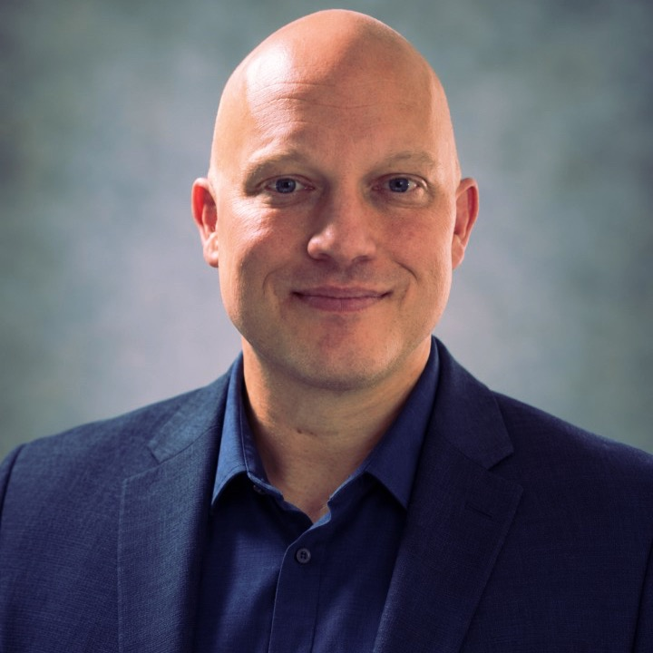

OSUCURRENT STUDY
Oregon State University
Electrical & Computer Engineering and Computer Science studies through Ecampus.
Mathematics · Physics · Data science
SYSTEMS ENGINEERING · APPLIED EXPLORATION
I’m Joshua Randall. I connect infrastructure, software, and scientific curiosity to build systems people can depend on.
CONNECTED SYSTEMS
Architect, build, secure, automate, and evolve.
Explore the systems behind the work →01 / EXPLORE THE WORK
Explore surfaces, curvature, diffusion, and geometric learning.
Open the Geometry Lab QUANTUM COMPUTINGExperiment with qubit states, measurement bases, and probability.
Explore a qubit INTERACTIVE WORLDSStep onto the board with themed pieces and animated captures.
Play 3D Battle Chess

02 / THE PERSON BEHIND THE SYSTEMS
My work starts with understanding how the pieces fit—and what happens when one of them fails.
Across enterprise infrastructure, independent consulting, and field engineering, I’ve worked at the intersection of technology and the people who depend on it. That experience now informs my study of computer architecture, robotics, high-performance computing, and quantum systems.
Explore my experience and résuméWindows and Linux, Azure and AWS, virtualization, networking, storage, and recovery. Systems designed to be operated, understood, and improved.
Active Directory, Entra ID, Microsoft 365, Intune, endpoint hardening, and practical access controls. Clear ownership and evidence behind each decision.
Python, PowerShell, Bash, SQL, Git, and repeatable workflows. Explore the recovery auditor, dependency analyzer, and employee lifecycle toolkit in the project collection.
Incident response, root-cause analysis, mentoring, vendor coordination, and project delivery. Technical depth translated into understandable decisions.
03 / EDUCATION & CONTINUING STUDY
Connecting years of hands-on work with the science and engineering behind what comes next.
Electrical & Computer Engineering and Computer Science studies through Ecampus.
Mathematics · Physics · Data science
Online quantum engineering study alongside my work at Oregon State.
Quantum systems · Advanced computation
BAS, Information Technology
AAS, Computer & Networking Technology
Pioneer Pacific College · Coding Temple · freeCodeCamp
Microsoft
AZ-900 · AZ-104 · AZ-305 · AZ-400 · AZ-800/801 · MS-102 · MD-102 · MS-700 · SC-300
MCP · MCSA · MCSE · MCITP
Infrastructure & vendors
CompTIA A+ · Network+ · Security+ · Linux+ · Server+
Cisco CCNA · VMware VCP · Lenovo · HP · LSCE Server / Storage
04 / THE QUANTUM CONNECTION
Explore an ideal entangled pair. Choose two measurement bases, run the experiment, and see how the outcomes relate.
|Φ⁺⟩ = (|00⟩ + |11⟩) / √2
The moving cubes are an artistic representation of a joint state. Entanglement does not send a signal between the particles.
Ideal probabilities: 00 and 11 each occur with probability 50%.
LET’S BUILD SOMETHING THAT MATTERS
Infrastructure, engineering, technical leadership, and the next challenging problem.